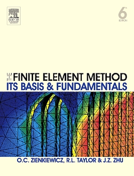
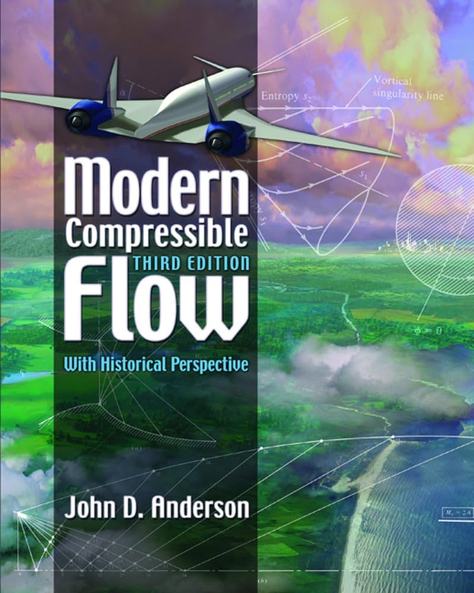

استاتيكا
ديناميكا
ديناميكا حرارية
تحكم آلي
نظرية الآلات
دوائر كهربائية عامة
مقاومة المواد
ميكانيكا الموائع
تصميم ميكانيكي
قياسات هندسية
عمليات تصنيع
محركات الاحتراق الداخلي
طرائق العنصر المحدود
● ملخصات:
دفتر د. فادي الفقس
ملخص إسلام أيوب
● شروحات:
- لجنة الميكانيك
● كتب:
The Finite Element Method: Its Basis and Fundamentals O. C. Zienkiewicz, R. L. Taylor & J. Z. Zhu
Finite Element Procedures Klaus-Jürgen Bathe
Concepts and Applications of Finite Element Analysis Robert D. Cook et al.

الرسم الهندسي
رسم ميكانيكي
علم المواد
آلات كهربائية
ديناميكا الغازات
● ملخصات:
● شروحات:
- إبراهيم الصيني
● كتب:
Modern Compressible Flow John D. Anderson
The Dynamics and Thermodynamics of Compressible Fluid Flow Ascher H. Shapiro
Gas Dynamics E. Rathakrishnan

تحويل الطاقة
اهتزازات ميكانيكية
محطات توليد طاقة
● ملخصات:
ملخص محطات
● شروحات:
- لجنة الميكانيك
● كتب:
Power Plant Engineering P. K. Nag
Power Plant Engineering R. K. Rajput